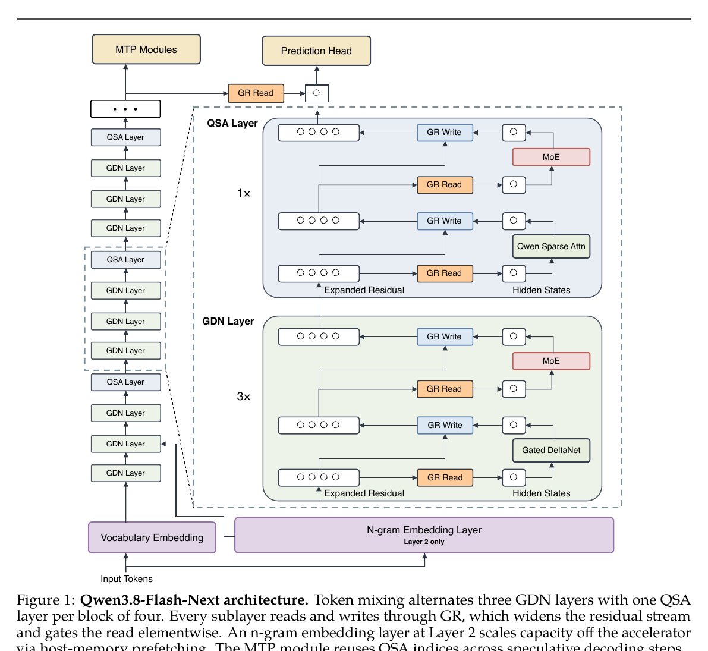
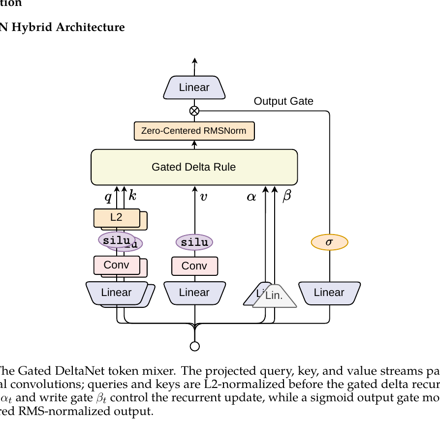
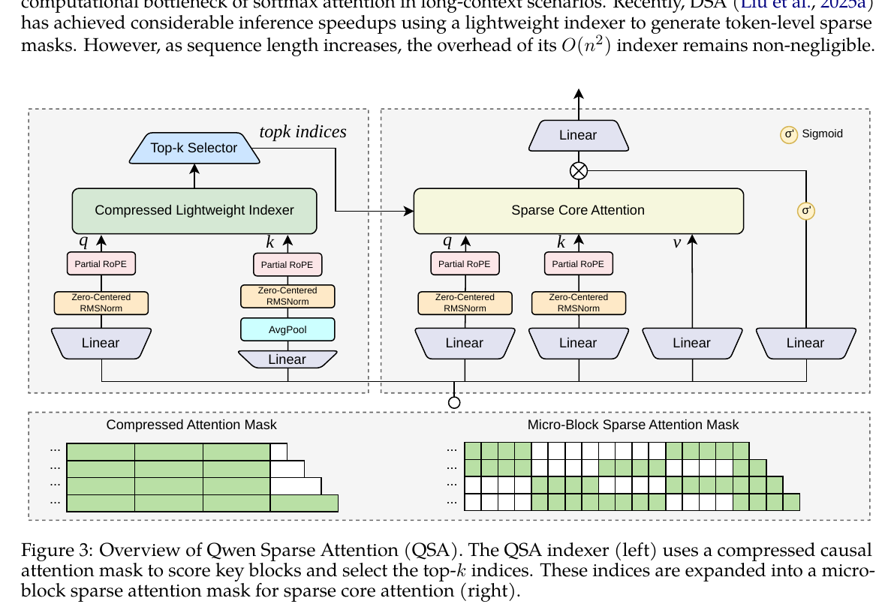
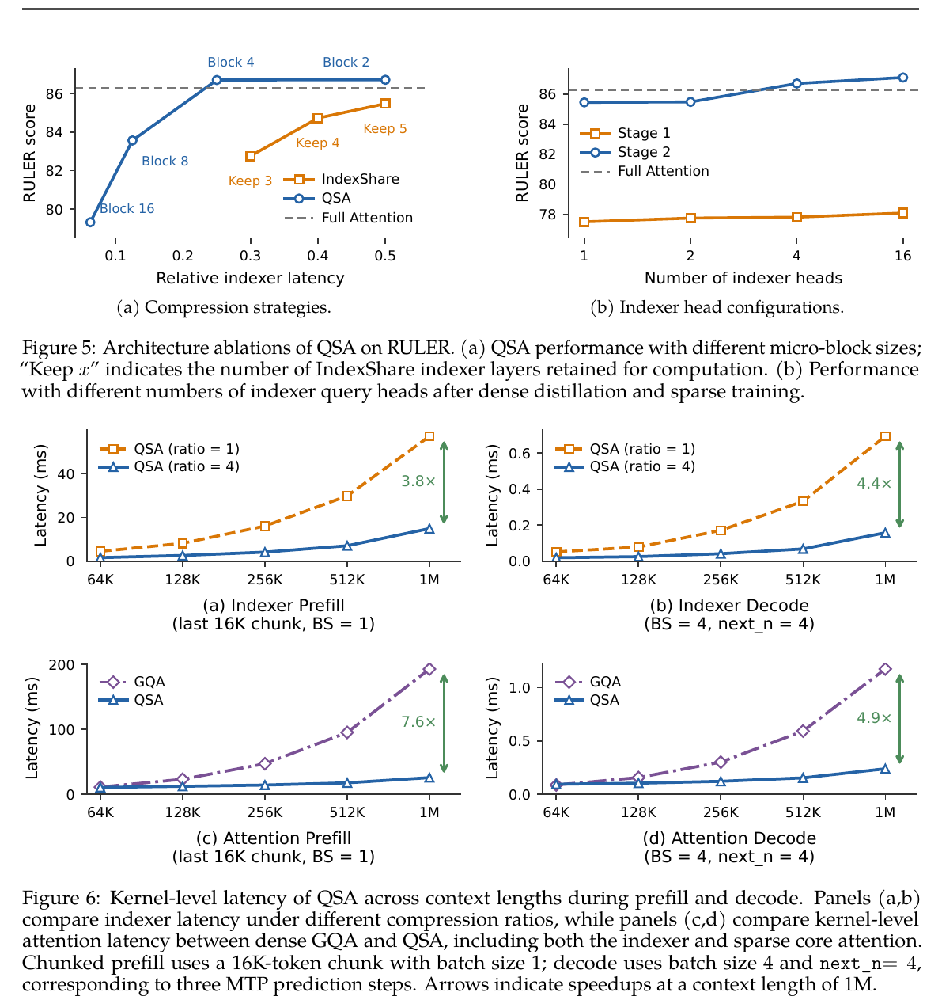
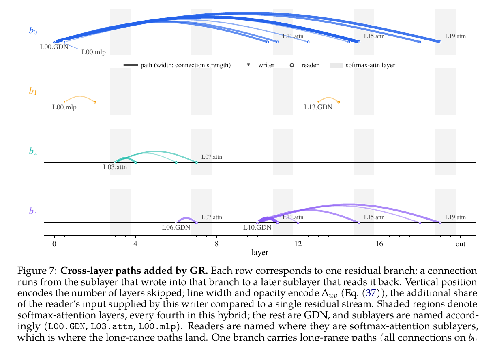
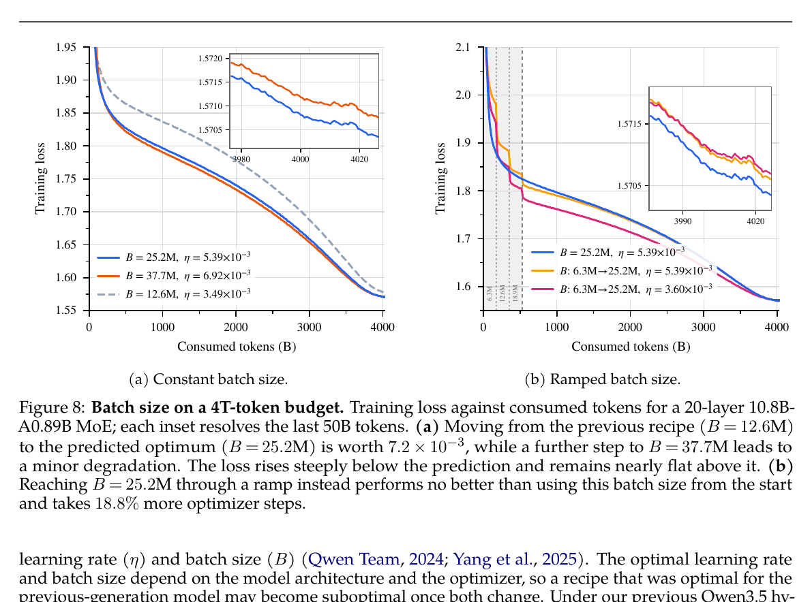
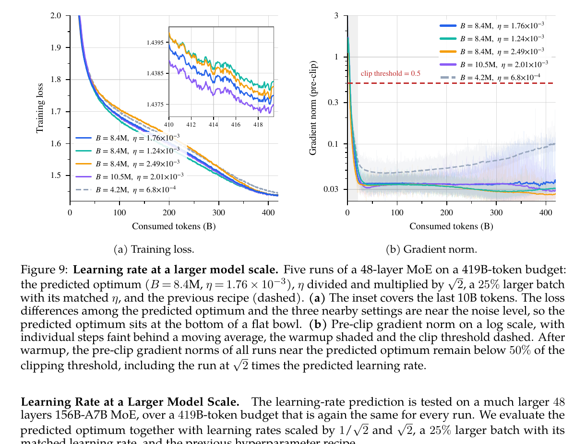
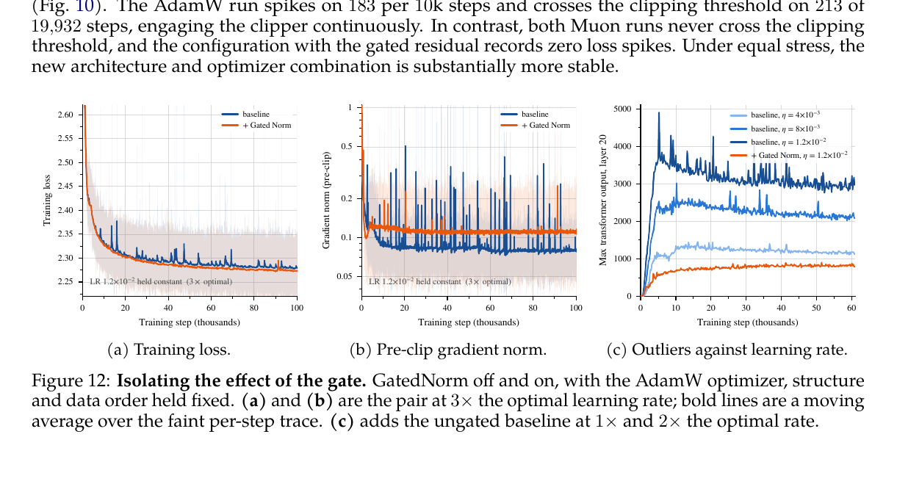
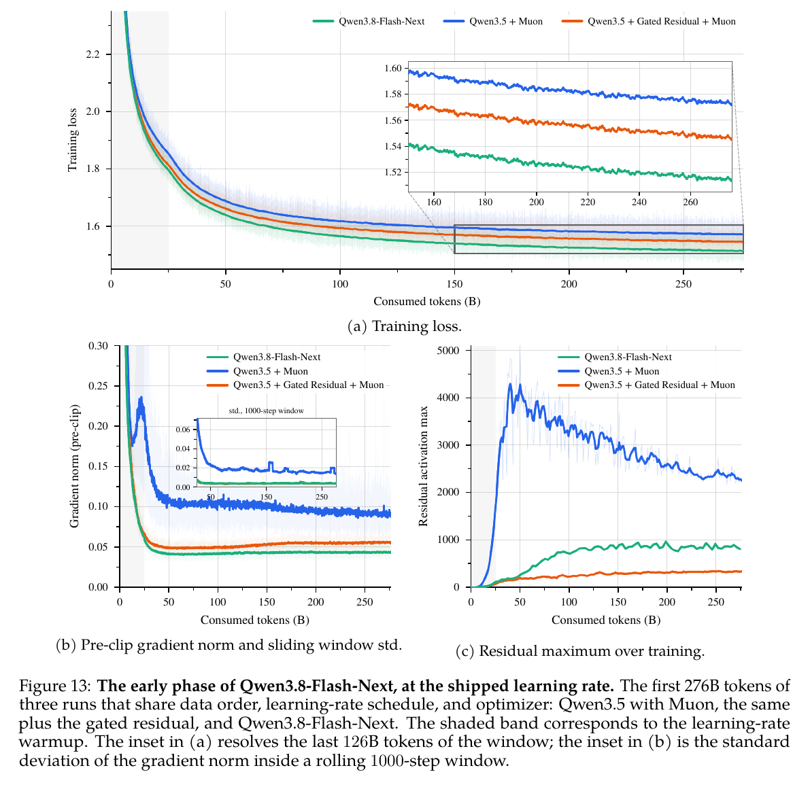
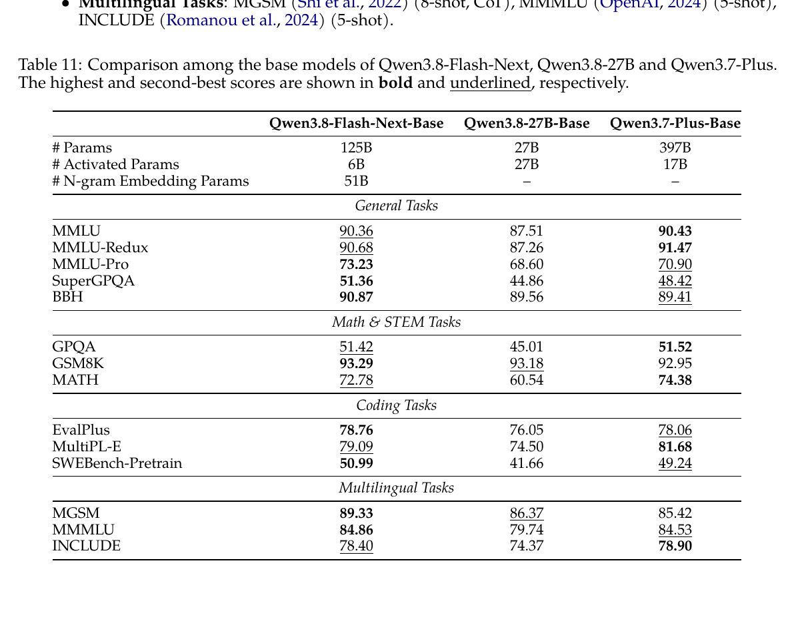

00 · Executive reading核心判断：这不是四个孤立模块，而是一套耦合设计
Qwen3.8-Flash-Next 的主线可以概括为：用 GDN 压低大多数层的序列状态成本，用 QSA 保留周期性的精确全局检索；用四分支 GR 改写跨层信息流并提供显式幅度调节；再以离卡 n-gram 表扩充“记忆容量”，最后重新拟合 Muon 下的批量、学习率与稳定性边界。
常态压缩，周期检索
36 层 GDN 把历史压进定长状态；12 层 QSA 仍能直接访问被索引器选中的远端 token。
四条流，各司其职
GR 不再让所有层共享一条残差河道；实验显示一条分支形成长程通路，另外三条偏局部。
把容量移出算力核心
51B n-gram 参数以确定性地址访问，可放主机内存并预取；增加容量几乎不增加矩阵 FLOPs。
稳定性换取更激进配方
GR 的显式 gate 降低梯度与激活异常，使更大 batch、更高学习率和取消 batch warmup 成为可行选择。
本文使用的证据等级
01 · Scope & release audit报告范围与公开模型不是完全同一口径
技术报告主要研究文本主干的架构选择、效率和预训练稳定性；公开的 Qwen3.8-Flash-Next 权重则是一个已后训练的多模态模型。理解这一点，才能正确归属论文表格、官方模型卡 benchmark 和部署信息。
研究对象：文本主干与 base model
核心是 GDN、QSA、GR、n-gram embedding、Muon 与 scaling recipe。论文最终 Table 11 比较的是三款 Base 模型的 14 项预训练 benchmark。
交付对象：多模态后训练模型
官方模型卡额外披露 27 层视觉编码器、4B MTP、语言与视觉 agent benchmark、思考模式以及 SGLang/vLLM/TokenSpeed 部署入口。
| 口径 | 公开信息 | 证据来源 |
|---|---|---|
| 语言主干 | 125B 总参数、每 token 激活 6B，另有 51B n-gram | 技术报告 + 官方模型卡 |
| MTP | 1 层、约 4B 参数；训练为多步预测，QSA 索引在推测步骤间复用 | 模型卡 + 报告 Fig.1 / Table 4 |
| 多模态 | 27 层视觉编码器，输出维度 2560，接入同一语言主干 | 官方 config.json |
| 上下文 | 原生 262,144；官方称可用 YaRN 扩展至 1,000,000 | 配置 + 官方博客 |
| 权重体积与协议 | HF 仓库约 360GB，Qwen Community License 1.0 | 官方 HF 仓库 |
02 · Macro architecture总体架构：48 层、512 专家、四条残差流

| 模块 | 官方配置 | 结构含义 |
|---|---|---|
| 主干 | 48 layers，hidden size 2560 | 12 组混合 token-mixing block |
| GDN | 48 value heads / 16 QK heads，head dim 128，短卷积核 4 | 36 层定长 recurrent state；Q/K/V 先经短因果卷积 |
| QSA core | 24 Q heads / 2 KV heads，head dim 256，RoPE dim 64 | 12 层稀疏全局检索；GQA core 降低 KV cache |
| QSA indexer | 4 Q heads / 1 shared K，dim 128；K=2048，r=4 | 每个 query 最多选 512 个完整 micro-block，再展开为 token |
| MoE | 512 routed experts；Top-10 + 1 shared；expert dim 640 | 极高总容量、较低每 token 激活参数 |
| GR | 4 branches；low-rank 320=d/8 | 逐通道动态读 gate + 每分支标量写 gate |
| N-gram | layer 2；20M slots；bigram/trigram；128-way split | 确定性 lookup memory，可与第 1 层计算重叠预取 |
一条 token 在一层里经历什么
这意味着 GR 不是偶尔插入的附加层，而是每个 token mixer 和每个 MoE 的统一接口。它同时承担旧式 pre-norm 的归一化职责、分支选择职责和幅度控制职责，因此训练稳定性提升会反馈到 attention、MoE、学习率与 batch size 的选择。
03 · Gated DeltaNetGDN：把绝大多数历史压进可更新的矩阵记忆
GDN 不是“缩小窗口的 attention”。它给每个 head 维护一个固定大小的 fast-weight 矩阵，当前 token 用 key 定位旧关联，用 value 与旧读出之差做增量写入，同时通过 decay gate 控制整张记忆的寿命。

et = vt − S̃t−1Tkt
St = S̃t−1 + βtktetT
yt = StTqt
全局遗忘
α∈(0,1) 衰减旧状态，控制已有记忆保留多久。
先读再比较
不是直接写 v，而是计算当前 key 已经读出了什么，再写残差误差。
定向改写
β∈(0,1) 控制 rank-1 delta update 的强度，避免相似 key 无界累加。
Qwen 在原始 GDN 上改了什么
- 输出 gate 从 SiLU 改为 sigmoid。报告把这项改动明确写为相对原始 GDN 的差异；bounded positive gate 与 GR、gated attention 的稳定性观察一致。
- 统一使用 zero-centered RMSNorm。这一做法沿用 Qwen3-Next，用来限制 RMSNorm gain 漂移。
- 每四层保留一层全局 attention。有限状态记忆无法精确替代任意 token 的直接寻址，因此 QSA 周期性提供全局检索。
- 保留 RoPE。NoPE 的预训练指标相近，但后训练后无休止生成率明显更高；最终配置不采用 NoPE。
| 28-layer 25B-A3B；400B@4K + 80B@32K | 平均分 | 相对观察 |
|---|---|---|
| Full attention | 49.87 | 直接全局访问，成本最高 |
| SWA hybrid（window 128） | 51.15 | 局部高效，但窗口外只能靠层深传播 |
| GDN hybrid | 53.81 | 9 项中胜 full attention 8 项、胜 SWA 7 项 |
04 · Qwen Sparse AttentionQSA：不只稀疏 core attention，也压缩索引器本身
QSA 明确沿着 DeepSeek Sparse Attention 的“轻量 indexer → Top-K → sparse core attention”路线继续设计。它针对 DSA 的剩余瓶颈做了关键改动：先把 key 序列按 4-token micro-block 压缩，再在 block 级打分，将索引复杂度从 O(n²) 降为 O(n²/r)。

Indexer 的具体数据流
Iib = Σh=1…H ReLU(⟨qih, k̄b⟩), 仅当该 block 已完整出现
KB = ⌈K/r⌉ = 512，K=2048，r=4
为什么池化必须发生在 RoPE 之前？如果先旋转再平均，相同内容会因 token 位置不同带着不同相位，平均后同时混合内容与旋转相位。QSA 先形成 block 内容摘要，再把该摘要放到 block 起始位置；这样一个 compressed key 对应一个清晰位置。
为什么尾部 incomplete block 永远加入？当前 query 附近的最新 token 还没凑满 4 个，不能进入只允许完整 block 的 causal indexer。直接把尾部 token 加入候选集，既保持严格因果性，也避免丢掉最邻近上下文。
两阶段训练：先学“去哪找”，再让主干适应“只看这些”
Stage 1 的 teacher block 用 max pooling，不是平均池化。原因是 attention 的关键证据可能集中在 block 内单个 token；平均会把尖峰稀释。Stage 2 则只在已选 block 上重新归一化 teacher probability，再计算 KL，让 indexer 与被稀疏化的主干一起适应。
| QSA 结果 | Full attention | QSA | 解释 |
|---|---|---|---|
| 8 项常规 benchmark 平均 | 75.9 | 76.8 | 7/8 不低于 full attention；不出现系统性短上下文退化 |
| RULER 512K–1M | 90.08 | 93.00 | 长上下文阶段反而更高 |
| MRCR 512K / 1M | 30.66 / 20.71 | 40.53 / 26.44 | 稀疏路由可能过滤大量无关上下文 |
| 四步 MTP accepted length | 4.06 | 4.07 | 复用 Top-K index 基本不影响接受长度 |

05 · Residual design普通残差、mHC、Attention Residual 与 GR：四种“跨层信息系统”
残差连接不只是让梯度绕过子层，它还规定了网络如何沿深度保存、读取和更新信息。四种方案可以用三个问题统一理解：历史被保存成什么状态？当前子层从哪里读？子层输出又写到哪里？
单流累加：所有历史先压成一个和
公共状态→Norm → F→直接相加
读固定为当前总和，写固定为系数 1 的加法。状态最省、identity path 最清晰，但某个早期输出一旦被加进总和，后层便无法把它与其他历史输出分开取回。
多流路由：标量读写 + 分支间动态混合
分支状态→Hmix
标量读→F→混合旧状态
+ 分支写入
把历史压进固定数量的并行状态；每个 token 可改变各分支的读写权重，并用 Hres 在分支间搬运已有内容。mHC 将 Hres 约束为双随机矩阵，以限制动态混合的放大与漂移。
历史库检索：直接 attention 到早期子层输出
历史输出库→depth-wise
softmax→F→追加新输出
每个子层不必接受“已经混成一团”的总和，而是对全部早期输出重新加权。检索最直接，但 Full AttnRes 保存和通信的状态随深度增长；Block 版用分块求和降低增长速度。
四流分工：逐通道读 + 标量写，不再混流
分支状态→Gi,c
逐通道读→F→标量写回
各分支
仍把历史压进固定四路状态，但读门细到“分支 × 通道”，让一个子层可从不同分支抽取不同特征；写回只保留每分支一个标量，并完全移除 Hres。
先看伪代码：差别发生在 read、write，还是 state
伪代码省略 batch/token 维、静态项和实现细节，目的是对齐四种机制的状态组织与读写接口。mHC 的具体参数化比这里更完整；Full AttnRes 的 key/value 都是早期子层输出，query 是每层一个可学习向量。
1. 普通残差：一条“不断做加法”的公共总线
y(ℓ) = F(ℓ)(Norm(x(ℓ)))
R(ℓ+1) = R(ℓ) + y(ℓ) = R(0) + Σu≤ℓ y(u)
普通 residual 的优点非常具体：每个 token 只维护一个 d 维状态；读写几乎不需要额外路由计算；加法中的 identity term 为信息和梯度提供直接路径。它的问题也来自同一个公式：所有历史输出都以固定权重 1 累加。第 20 个子层看到的是一个总和，而不是一个带标签的历史列表；如果它只需要第 2 层留下的某项特征，只能尝试从混合后的向量中重新解码。
因此所谓“早期信号被稀释”不是早期输出凭空消失，而是它在总状态中的相对占比随新增输出下降，并且后层没有独立选择系数。后续子层若想增强自己的影响，还可能倾向产生更大的输出，进一步推动 residual magnitude 随深度增长。
2. mHC：固定多分支状态，但增加一次分支间重路由
y(ℓ) = F(ℓ)(Norm(x(ℓ)))
R(ℓ+1) = HresR(ℓ) + Hcombiney(ℓ)T
HC/mHC 把一条 d 维流扩为 nr 条。Hmix 决定当前子层从每条分支读多少，Hcombine 决定新输出写进各分支多少，Hres 则在进入下一子层前重新混合旧分支。三者都可由当前 residual state 动态预测，所以不同 token 可以走不同的跨层路线。
关键是 Hmix 和 Hcombine 在标准 HC/mHC 中主要是每分支一个标量：选中一条分支时，整条 d 维向量一起缩放。额外的 nr×nr 矩阵 Hres 提供分支间交换能力。mHC 用 sigmoid，并把 Hres 投影到双随机矩阵集合——元素非负、每行和每列均为 1——使旧状态的更新更接近受约束的“重新分配”，而不是任意放大；配合 identity 初始化，可保留稳定的直通路径。
3. Attention Residual：把“层深”当作 attention 的序列轴
αi→ℓ = softmaxi<ℓ(wℓT RMSNorm(vi))
hℓ = Σi=0…ℓ−1 αi→ℓvi
Full AttnRes 不再递归维护一个 residual sum，而是保存 embedding 与每个早期子层的输出。第 ℓ 个子层用一个可学习的伪 query wℓ 对这些输出计算 softmax，再形成自己的输入。query 对该层固定，但 key 来自每个 token 的历史表示，因此深度权重仍然随输入而变。
它与序列 attention 的类比很直观：token attention 在时间轴上检索早期 token，AttnRes 在深度轴上检索早期 layer output。Full 版可直接回到某个早期输出，代价是单个 token 需保留 O(Ld) 历史，全部层的深度 attention 算术量为 O(L²d)；在 activation recomputation 和 pipeline parallelism 下，这些历史还需要持续保存与跨 stage 传输。
Block AttnRes 将每 S 个子层输出先求和成一个 block representation，再在 block 间 attention，使状态与通信从 O(Ld) 降到 O((L/S)d)。代价是 block 内输出再次失去身份：softmax 只能选择“这一组层的总和”，无法区分组内哪一层真正有用。
4. GR：用四个压缩记忆槽，换取更细的读取粒度
G = unvec(σ(Wu SiLU((1/nr)Wd vec(R̂)))) ∈ Rnr×d
x = (1/nr) Σi Gi ⊙ R̂i
s = 2σ((1/nr)Wwvec(R̂)), R′i = Ri + siy
GR 延续 widened residual 的固定多流结构，但把表达力从 Hres 转移到 read。它先分别归一化四条分支，再由全部 4d 状态通过 d/8 的低秩瓶颈，生成 4×d 个 sigmoid gate。于是同一个子层可以从分支 1 取“语法相关通道”、从分支 3 取“长程实体相关通道”，而不是像 mHC 那样对整条分支使用同一个缩放系数。
这里的 G 不是沿分支 softmax：四条分支的权重不要求和为 1，每个通道可以同时开放多条分支，也可以全部压低。写端则只生成四个 (0,2) 标量，把同一个子层输出以不同强度加回各分支。报告消融发现逐通道 read 有收益，逐通道 write 几乎没有，因此最终设计把容量花在读取而非写入。
四条分支分别归一化
每条分支拥有独立 gain γ；GR read 本身已完成归一化，因此取代普通 block pre-norm，而非在它前面再叠一层。
低秩预测，逐通道执行
路由器从 4d 压到 d/8 再升到 4d。当前 d=2560，瓶颈 rank=320；输出 gate 仍覆盖每个分支和通道。
分支不互相改写
每条分支只保留自己的历史并接收新 y。移除 Hres 少一次完整 residual-state 读取，也让路径贡献可精确分解。
一个具体例子：当前层需要“长期实体 + 最近句法”
放在一张表里：能力与成本分别来自哪里
| 设计 | 持久状态（每 token） | 选择粒度 | 旧状态如何演化 | 主要优势 | 主要成本 / 局限 |
|---|---|---|---|---|---|
| Pre-norm residual | O(d) | 无动态选择；所有历史权重为 1 | 单流累加 | 最省显存与带宽；identity path 简洁 | 早期输出不可单独取回；相对贡献随深度稀释 |
| mHC，nr branches | O(nrd) | 读写通常为每分支标量 | Hres 动态跨分支混合 | 固定成本下扩大跨层容量；路由随输入变化 | 标量读不能按通道组合；Hres 增加整状态读取与约束 |
| Full AttnRes | O(Ld) | 每个历史子层一个 softmax 标量 | 历史输出独立保存并追加 | 可直接选择具体早期输出；选择空间最完整 | 全网 O(L²d) 深度 attention；大规模重计算/流水并行下保存与通信昂贵 |
| Block AttnRes，block size S | O((L/S)d) | 每个 block 一个 softmax 标量 | block 内先固定求和 | 保留部分深度检索，降低状态与通信 | 组内层身份被压缩；S 越大信息损失越明显 |
| GR，nr=4 | O(4d)，不随 L 增长 | 读为每分支×每通道；写为每分支标量 | 无分支混合，各自累加 | 固定状态下组合不同分支的不同通道；路径清晰 | 仍是压缩记忆而非完整历史；四路 residual 带宽是核心开销 |
复杂度只描述残差机制自身的持久状态与深度聚合，不代表整个 Transformer 的总 FLOPs。Full AttnRes 在普通、不做 activation recomputation 的训练中可复用本就保留的反向激活；在大规模重计算与 pipeline parallelism 下，额外保存和通信才成为主要问题。
Qwen 的直接消融：GR 相对 mHC，收益来自哪里
| 25B-A3B，560B tokens，4 branches | Loss | 9 项平均 | 相对上一行的关键信号 |
|---|---|---|---|
| Pre-norm | 1.617 | 50.91 | 单流基线 |
| mHC static | 1.596 | 52.49 | 只扩宽与静态读写：loss −0.021，平均 +1.58 |
| mHC dynamic | 1.594 | 54.47 | 动态路由：loss 只再降 0.002，平均却再升 1.98 |
| GR | 1.590 | 54.66 | 逐通道读 + 移除 Hres：质量相当略优，状态读取更少 |
这组实验说明两件事。第一，提升并不全来自复杂门控：把 residual 从一条扩成四条、即使只使用静态算子，也贡献了主要 loss 降幅。第二，动态路由的价值更容易体现在 benchmark 而非训练 loss；若只看 0.002 的 loss 差，会低估 static→dynamic 带来的 1.98 分平均提升。
Qwen 的直接消融：AttnRes 的 loss 更低，为何最终仍选 GR
| 28 layers / 56 sublayers | 原设计 Loss | + GatedNorm | 怎么读 |
|---|---|---|---|
| Pre-norm | 1.789 | 1.787 | GN 改善 0.002 |
| Block AttnRes，S=4 | 1.773 | 1.768 | 四个子层先求和；GN 改善 0.005 |
| Block AttnRes，S=2 | 1.770 | 1.766 | 压缩更轻，优于 S=4 |
| Full AttnRes | 1.762 | 1.758 | 本表最低 loss，但状态/通信随深度增长 |
| GR，nr=4 | — | 1.762 | 与未加 GN 的 Full AttnRes 持平；固定四路状态 |
这张表不能解读成“GR 在纯 loss 上击败 AttnRes”：Full AttnRes + GatedNorm 的 1.758 是最低值，GR 为 1.762。结合最终采用 GR 的架构与两类方案的系统成本看，实际取舍相当于用 0.004 loss 换固定 O(4d) 状态和更简单的流水并行路径。48 层的另一组实验中，Block AttnRes S=4 为 1.711，GR 为 1.707；报告没有在该设置给出 Full AttnRes 数字。
四条分支最终学到了什么

路径分解给出比“残差更宽所以更强”更具体的机制：Layer 0 GDN → Layer 15 attention 的输入份额从 0.020 升到 0.138；Layer 10 GDN → Layer 11 attention 的增量也达到 0.117。总体上，adjacent path 与 skip>12 的份额上升，中距离 2–12 层路径下降。GR 没有简单增加平均跨层距离，而是把容量重分配给少数短程和长程关键通路。
推理侧为什么没有采用 Top-2 分支读
训练后可观察到写入常由两条分支主导，于是团队试过只读 gate 最大的两条分支。预训练 loss 与 benchmark 几乎不变，但后训练质量明显下降，最终放弃。实际优化选择是：将 residual state 保存为 FP8，使相对 BF16 的搬运字节减半；再把 read/write 各自融合成一个 kernel，并把 group RMSNorm 折进 read。
06 · N-gram embedding把“参数容量”从专家计算搬到确定性查表
MoE 用 router 选择要计算的专家；n-gram memory 用最近的局部 token 片段直接生成地址，查出向量并加到 token representation。前者增加条件计算，后者增加条件记忆，两者是正交的稀疏化轴。
为什么只放 Layer 2
固定 n-gram 参数预算时，单层位置从浅到深都能降低 loss，多层分摊没有一致收益。Layer 2 的平均分最高（47.94，基线 45.44），并允许在 Layer 1 计算期间预取查表结果。选择 Layer 2 因而同时满足质量与系统重叠。
| 实验问题 | 结果 | 设计决策 |
|---|---|---|
| 相同总参数：减少专家、增加 n-gram | loss 在 10× vocab 最低，但下游不稳定，未形成对 MoE-only 的清晰优势 | 不把 n-gram 当成专家的等价替代 |
| 保持 MoE 不变，额外增加 n-gram | 20×→200× vocab 时 loss 1.553→1.526 单调下降；多数 benchmark 饱和或波动 | 作为额外 memory capacity 扩容 |
| 中文 benchmark | C-Eval 71.75→74.94，CMMLU 72.29→73.24，随 vocab 较一致上升 | 局部词片段查表对中文组合模式尤其有效 |
技术来源方面，报告把该模块放在 N-Grammer、Gemma 3n、DeepEmbed、Conditional Memory/Engram、Scaling Embeddings 等 lookup-memory 路线中。最终设计与 Engram 在“n-gram 地址、离卡存储、预取”的思想上接近；报告将这些工作并列引用，未指定单一直接祖先。
07 · Optimizer & systemMuon 不只是换更新公式，还重做了参数归属与分布式执行
Muon 对矩阵动量做 Newton–Schulz 正交化。真正困难的是：Megatron 中一个逻辑矩阵可能被 TP 切开，而不同矩阵的 NS FLOPs 随短边近似三次增长，按参数元素平均切 DP 会产生严重 straggler。Qwen 通过 Canzona 解耦“物理存放位置”和“谁负责算 optimizer”。
哪些参数用 Muon，哪些不用
| 参数类别 | 优化器 | 原因 |
|---|---|---|
| attention Q/K/V/O；GDN 输入/输出；MoE fc1/fc2；n-gram K/V projection | Muon | 二维权重确实扮演共享结构的线性映射 |
| input embedding、LM head | AdamW | 不是普通隐层矩阵更新问题 |
| MoE router | AdamW | Muon 加剧早期波动；专家 logit 维度更接近相互独立输出 |
| GR 两个细长 low-rank projection | AdamW | 极长宽比下消融表现更好 |
| attention/GDN output gate、GDN α/β 向量 | AdamW | gate 不优于 AdamW；标量/向量不适合矩阵正交化 |
| n-gram table | Adam，无 weight decay | 稀疏 lookup table |
Muon 细节
- Nesterov momentum μ=0.95；更新按矩阵形状缩放，使 update RMS 不依赖 shape。
- 使用 Polar Express 的逐步系数；Newton–Schulz 迭代 8 步。更多迭代不仅正交化更准确，也降低 stress test 的 gradient spike。
- QKV、SwiGLU fc1、GDN input 在 Megatron 里是 fused matrix，但语义上由独立算子拼接。报告先按 head 或 gate/up 切分，再各自 NS，避免把无关奇异方向混在一起。
Canzona 的分布式路线
切分 fused 参数后，一层会产生约百个小矩阵，optimizer step 容易从算力受限变成 kernel launch 受限。最终把整个 step 捕获进 CUDA Graph。这里的贡献重点是让 Muon 在 Megatron 3D parallelism 下保持数学等价、负载均衡和通信重叠，不是更改 Muon 的目标函数。
08 · Hyperparameter scaling新架构 + Muon 改变了“最合适的 batch 与学习率”
旧 Qwen3.5 的 scaling law 不能直接平移。团队重新拟合 η 与 batch size：新配方的近优区域整体向更大 batch、更高 learning rate 移动，而且大 batch 的损失曲线在最优点上方很平，在下方却陡峭。

| 验证 | 旧配方 | 新预测 | 观察 |
|---|---|---|---|
| 小模型、超长 token budget | B=12.6M | B=25.2M | 最后 20B token loss：1.5774 → 1.5702 |
| batch warmup | 6.3M 分段升到 25.2M | 固定 25.2M | warmup 略差，并多 18.8% optimizer steps |
| 大模型、419B-token | B=4.2M, η=6.8e−4 | B=8.4M, η=1.76e−3 | 旧配方最终 loss 高 0.0078；benchmark 平均 56.41 vs 60.55 |

09 · Training stability稳定性不是“没炸过”，而是用高学习率主动把故障放大
大模型生产训练的偶发 spike 很难用小实验观察。报告采用 stress test：在 28-layer MoE 上保持 2×、4× 最优学习率不衰减，让本应在超长生产训练中才出现的不稳定性在 10 万步内暴露。
Muon 抵抗早期 spike
AdamW Qwen3.5 为 4.3 spikes/10k；两种 Muon 配置约 0.2/10k。
GR 拉开类别差异
AdamW 183 spikes/10k；Muon+GR 为 0，且 Muon 组都未跨 0.5 clipping threshold。
控制变量确认 gate 作用
AdamW、结构、数据顺序相同，打开 GatedNorm 后 spike 32.0→3.2/10k，threshold crossing 256→20。

生产规模前 276B token 的同数据对照

- Qwen3.5+Muon 的 median/p99.9 gradient norm 为 0.097/0.298；加 GR 后 0.053/0.071；完整 Flash-Next 为 0.043/0.066。
- 两组 gated run 的 1000-step rolling std 低 4.3–4.7×；只有无 gate 的 Muon run 跨过 clipping threshold。
- GR 显著降低各层 residual maximum。最终训练不依赖 qk-clip 或 SwiGLU-clip 这类显式 activation clipping。
10 · Disclosure audit训练数据、算力、时长与部署：报告披露到哪里
这份报告的重点是架构实验，不是完整训练或部署白皮书。它披露了大量 ablation token budget、QSA CPT token 和相对成本，但没有给出主模型总训练 token 的绝对值、训练卡数、硬件拓扑、墙钟时长或 MFU。
| 问题 | 报告可确认 | 仍未披露 |
|---|---|---|
| 主模型训练数据量 | 相对 Qwen3.7-Plus 约 1/3 training tokens；QSA Stage 1≈2B、Stage 2≈200B；生产对照展示前 276B | 完整预训练 token 绝对量、数据构成、去重与语言比例 |
| 训练算力 | 相对训练 FLOPs 约 1/9；FlashQLA 在 NVIDIA GPU 上测试 | GPU 型号、卡数、并行配置、MFU、总 GPU hours |
| 训练时长 | 无 | 墙钟天数、失败/恢复成本 |
| 长上下文训练 | QSA 在 256K CPT 中引入，共 9000 steps、约 202B token | 完整 context curriculum 与 YaRN 训练细节 |
| 推理系统 | QSA/FlashQLA/GR fused kernel；FP8 residual；host-memory n-gram prefetch；CUDA Graph optimizer | 官方集群调度、KV cache 层级、PD disaggregation、端到端吞吐/TTFT |
能否理解为“用了 vLLM / SGLang 就完成部署优化”
官方模型卡给出 SGLang、vLLM 和 TokenSpeed 的部署入口，这说明生态兼容已经完成；技术报告中的主要效率工作却发生在模型算子与训练系统层：FlashQLA、QSA sparse kernel、GR read/write fusion、FP8 residual、n-gram host prefetch、Canzona 和 CUDA Graph。它没有给出类似 Mooncake 的多级缓存、PD 分离或跨节点 serving 调度设计，因此不能据此声称完成了全栈在线服务优化。
11 · Evaluation论文证明的是 base-model 效率前沿，不是完整产品能力排名
Table 11 比较 Qwen3.8-Flash-Next-Base、Qwen3.8-27B-Base 与 Qwen3.7-Plus-Base。Flash-Next 在 14 项中全部超过 27B dense，并在 8/14 超过 397B-A17B 前代；其余差距最大 2.6 分。

14 / 14 领先
说明 6B active 的稀疏模型在此训练量下建立了更高容量效率。
8 / 14 领先
以 1/3 active params、1/3 tokens 达到相近 base quality。
≈1/9 training FLOPs
主要由 active params 与 token 两个约 1/3 相乘得来，是近似相对口径。
如何看官方后训练 benchmark
官方模型卡另给出 DeepSWE、SWE-bench Pro、CoWorkBench、OSWorld、MathVision 等语言/视觉 agent 结果。这些数据证明公开 checkpoint 的产品能力，但并非本技术报告的同一组实验：部分是内部 benchmark，harness、上下文与 judge 也各不相同。本文把它们作为发布补充，不混入论文 Table 11 的架构因果论证。
12 · Technical provenance技术谱系：明确继承、再设计与相关路线
下图按证据强度描述技术关系。实线节点表示报告明确采用或组合；虚线节点表示同问题域的结构比较。相近不自动等于来源。
Token mixing
Residual
Memory & optimization
13 · Evidence boundaries证据边界与阅读结论
报告直接支持的结论
3:1 GDN/QSA；QSA micro-block indexer 与两阶段 CPT；GR 四分支、逐通道读 gate；Layer 2 n-gram；Muon 参数分类；stress test 与 base benchmark。
模型卡/配置支持的结论
48 层、512 experts、Top-10+shared、20M n-gram slots、4B MTP、视觉 encoder、256K/1M context、公开部署框架。
不能从报告得到的结论
主训练绝对 token、数据混合、GPU 规模、MFU、时长、完整 serving topology、端到端 API 吞吐与每模块最终 125B 贡献。
本文的综合判断
QSA 解决全局检索，GDN 解决常态状态成本，GR 解决跨层容量和幅度调节，n-gram 解决“容量不必等于计算”，Muon/Canzona 把收敛和系统执行闭环。